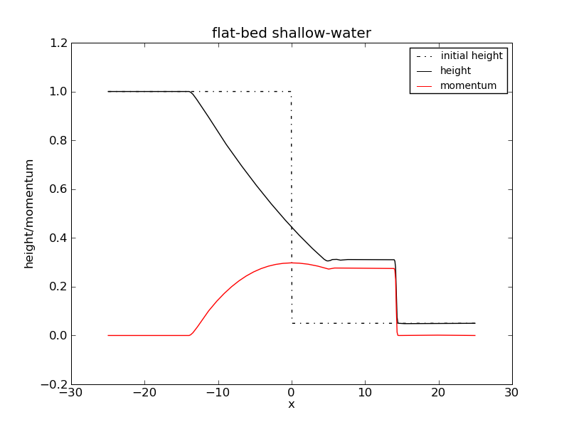
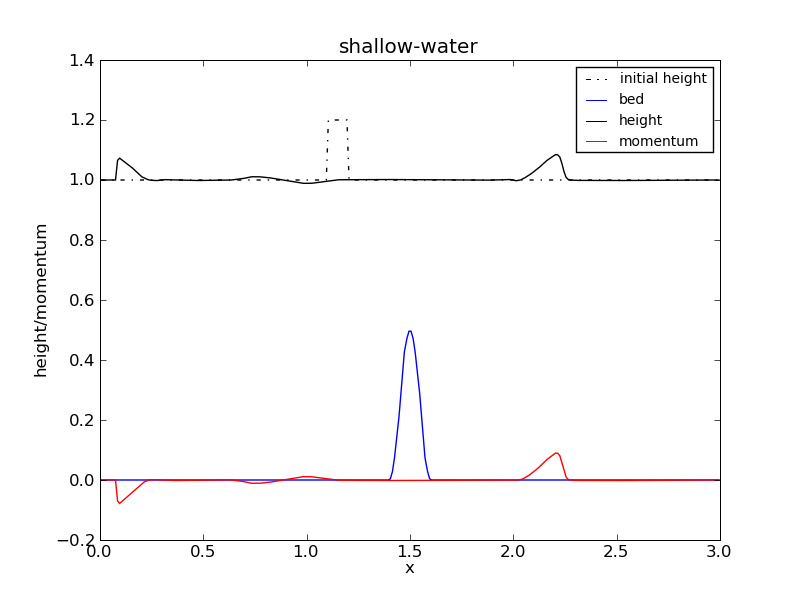

Python code
"""Shallow-water solver.
This flat-bed shallow-water solver serves as short example of how
to use the PyBLAW framework.
It solves the depth-averaged shallow-water equations, which are
* height: h_t + (u h)_x = 0
* momentum: (h u)_t + ( h u^2 + 1/2 h^2 )_x = 0
where h is the depth of the fluid, and u is the velocity of the
fluid.
Throughout, q is:
* q[i,0] - average depth in cell C_i
* q[i,1] - average momentum in cell C_i
"""
import numpy as np
import pyblaw.wenoclaw
import pyblaw.system
# import cython flux and source functions
import pyximport; pyximport.install()
import cflatshallowwater
# import maplotlib for debugging
import matplotlib.pyplot as plt
# initial conditions (dambreak into shallow tail water)
def h0(x, t):
if x <= 0.0:
return 1.0
return 0.05
def q0(x, t):
return np.array([h0(x,t), 0.0])
# the solver
solver = pyblaw.wenoclaw.WENOCLAWLFSolver(
order=3,
times=np.linspace(0.0, 15.0, 15*10*4+1),
flux={ 'flux': cflatshallowwater.f, 'alpha': 2.0 },
system=pyblaw.system.SimpleSystem(q0),
cache='flat_shallow_water_cache.mat',
output='flat_shallow_water.mat'
)
# debug reconstructor: plot reconstructions
def debug(**kwargs):
t = kwargs['t']
q = kwargs['q']
qm = kwargs['qm']
qp = kwargs['qp']
if t > 7.4:
plt.clf()
x = solver.grid.centers()
plt.plot(x, q[:,0], '-k')
x = solver.grid.boundaries()
plt.plot(x, qm[:,0], 'or')
plt.plot(x, qp[:,0], 'ob')
plt.draw()
while not plt.waitforbuttonpress():
pass
solver.reconstructor.debug = debug
# build/load grid and cache
if not solver.load_cache():
solver.build_cache(np.linspace(-25.0, 25.0, 50*10+1))
# giv'r!
solver.run()
Cython flux code
"""Flat-bed shallow-water flux."""
import numpy as np
cimport numpy as np
cimport cython
@cython.boundscheck(False)
def f(np.ndarray[np.double_t, ndim=2] q,
np.ndarray[np.double_t, ndim=2] flux,
**kwargs):
cdef int N = q.shape[0]
cdef unsigned int i
for i in range(1, N-1):
if q[i,0] > 0.0:
flux[i,0] = q[i,1]
flux[i,1] = q[i,1]*q[i,1]/q[i,0] + 0.5 * q[i,0]*q[i,0]
else:
flux[i,0] = 0.0
flux[i,1] = 0.0
flux[0,:] = flux[1,:]
flux[N-1,:] = flux[N-2,:]
Plot
Python code
"""Shallow-water solver.
This shallow-water solver serves as short example of how to use the
PyBLAW framework.
It solves the depth-averaged shallow-water equations, over a
non-flat bed, which are
* height: h_t + (u h)_x = 0
* momentum: (h u)_t + ( h u^2 + 1/2 h^2 )_x = - h b_x
where h is the depth of the fluid, u is the velocity of the fluid,
and b is the bed topography.
Throughout, q is:
* q[i,0] - average depth in cell C_i
* q[i,1] - average momentum in cell C_i
* q[i,2] - average bed height in cell C_i (fixed)
* q[i,3] - average bed height squared in cell C_i (fixed)
"""
import math
import os
import numpy as np
import pyweno.grid
import pyweno.weno
import pyblaw.wenosolver
import pyblaw.system
# import cython flux and source functions
import pyximport; pyximport.install()
import cshallowwater
# initial conditions (slightly perturbed still water from LeVeque)
epsilon = 0.2
def h0(x, t):
if abs(x - 1.15) < 0.05:
return 1.0 + epsilon - b0(x,t)
return 1.0 - b0(x,t)
def b0(x,t):
if abs(x - 1.5) < 0.1:
return 0.25 * ( math.cos( math.pi*(x - 1.5)/0.1 ) + 1.0 )
return 0.0
def q0(x, t):
return np.array([h0(x,t), 0.0, b0(x,t)])
# well-balanced reconstructor
class ShallowWaterReconstructor(pyblaw.reconstructor.Reconstructor):
def __init__(self, order, cache):
self.k = order
self.cache = cache
def pre_run(self, **kwargs):
self.weno = pyweno.weno.WENO(order=self.k, cache=self.cache)
def reconstruct(self, q, qm, qp, qq, **kwargs):
weno = self.weno
# flux and source reconstructions at cell boundaries
weno.smoothness(q[:,0])
weno.weights('left')
for m in (0, 1, 2):
weno.reconstruct(q[:,m], 'left', qp[:,m], False)
weno.weights('right')
for m in (0, 1, 2):
weno.reconstruct(q[:,m], 'right', qm[:,m], False)
# source reconstructions at quadrature points (see cshallowwater.pyx)
weno.weights('gauss_quad3')
weno.reconstruct(q[:,0], 'gauss_quad3', qq[:,:,0], compute_weights=False)
weno.reconstruct(q[:,2], 'gauss_quad3', qq[:,:,1], compute_weights=False)
weno.weights('d|gauss_quad3')
weno.reconstruct(q[:,2], 'd|gauss_quad3', qq[:,:,2], compute_weights=False)
qm[1:,:] = qm[:-1,:] # XXX, tweak PyWENO so we don't have to do this
# define a solver to use our reconstructor and build/load a cache
class ShallowWaterSolver(pyblaw.solver.Solver):
def __init__(self,
times=None,
dump_times=None,
cache='shallow_water_cache.mat', output='shallow_water.mat'):
self.k = 3
self.cache = cache
self.output = output
system = pyblaw.system.SimpleSystem(q0)
flux = pyblaw.flux.SimpleFlux(cshallowwater.f)
source = pyblaw.source.SimpleSource(cshallowwater.s)
reconstructor = ShallowWaterReconstructor(self.k, self.cache)
evolver = pyblaw.evolver.SSPERK3()
dumper = pyblaw.dumper.MATDumper(output)
pyblaw.solver.Solver.__init__(self,
system=system,
reconstructor=reconstructor,
flux=flux,
source=source,
evolver=evolver,
dumper=dumper,
times=times,
dump_times=dump_times)
def load_cache(self):
if not os.access(self.cache, os.F_OK):
return False
self.grid = pyweno.grid.Grid(cache=self.cache, format='mat')
self.weno = pyweno.weno.WENO(order=self.k, cache=self.cache, format='mat')
return True
def build_cache(self, x=None):
grid = pyweno.grid.Grid(x)
weno = pyweno.weno.WENO(grid=grid, order=self.k)
weno.precompute_reconstruction('left')
weno.precompute_reconstruction('right')
weno.precompute_reconstruction('gauss_quad3')
weno.precompute_reconstruction('d|gauss_quad3')
weno.cache(self.cache)
self.grid = grid
self.weno = weno
# the solver
solver = ShallowWaterSolver(
times=np.linspace(0.0, 1.0, 300+1),
dump_times=np.linspace(0.0, 1.0, 150+1)
)
# build/load grid and cache
if not solver.load_cache():
solver.build_cache(np.linspace(0.0, 3.0, 300+1))
# giv'r!
solver.run()
Cython flux and source code
"""Shallow-water flux and source."""
import numpy as np
cimport numpy as np
cimport cython
# shallow water flux function
cdef void flux(double q[4], double f[4]):
if q[0] > 0.0:
f[0] = q[1]
f[1] = q[1]*q[1]/q[0] + 0.5 * q[0]*q[0]
else:
f[0] = 0.0
f[1] = 0.0
#f[2] = 0.0
#f[3] = 0.0
# shallow water numerical flux that well-balances still water
cdef void swflux(double qm[4], double qp[4], double f[4]):
cdef double fm[4]
cdef double fp[4]
cdef unsigned int j
flux(qm, fm)
flux(qp, fp)
f[0] = 0.5 * ( fm[0] + fp[0] - 2.0 * ( (qp[0] + qp[2]) - (qm[0] + qm[2]) ) )
f[1] = 0.5 * ( fm[1] + fp[1] - 2.0 * ( qp[1] - qm[1] ) )
#f[2] = 0.0
#f[3] = 0.0
# shallow water net numerical flux
@cython.boundscheck(False)
def f(np.ndarray[np.double_t, ndim=2] qm,
np.ndarray[np.double_t, ndim=2] qp,
np.ndarray[np.double_t, ndim=1] dx,
np.ndarray[np.double_t, ndim=2] flux,
**kwargs):
# components are: 0: height, 1: momentum
cdef unsigned int N
cdef unsigned int i, j
cdef double fl[4], fr[4]
N = qm.shape[0]
swflux(&qm[8,0], &qp[8,0], fr)
for i in range(8, N-8):
for j in range(4):
fl[j] = fr[j]
swflux(&qm[i+1,0], &qp[i+1,0], fr)
for j in range(2):
flux[i,j] = ( fl[j] - fr[j] ) / dx[i]
flux[i,2] = 0.0
# shallow water source that well-balances still water
cdef double w3[3]
w3[0] = 0.5*5.0/9.0
w3[1] = 0.5*8.0/9.0
w3[2] = 0.5*5.0/9.0
@cython.boundscheck(False)
def s(np.ndarray[np.double_t, ndim=2] qm,
np.ndarray[np.double_t, ndim=2] qp,
np.ndarray[np.double_t, ndim=3] qq,
np.ndarray[np.double_t, ndim=1] dx,
np.ndarray[np.double_t, ndim=2] source,
**kwargs):
# qm, qp components are: 0: height, 1: momentum, 2: bed
# qq components are: 0: height, 1: bed, 2: d/dx bed
cdef int N = qq.shape[0]
cdef unsigned int i
cdef unsigned int j
cdef double s1, s2, t1, t2
cdef double st1q[3], st2q[3]
for i in range(8, N-8):
source[i,0] = 0.0
source[i,2] = 0.0
source[i,3] = 0.0
s1 = - (qp[i,0] + qp[i,2]) - (qm[i+1,0] + qm[i+1,2])
s2 = 1.0
t1 = 0.5 * ( qm[i+1,2] + qp[i+1,2] - qm[i,2] - qp[i,2] )
t2 = 0.5 * ( qm[i+1,2]*qm[i+1,2] + qp[i+1,2]*qp[i+1,2] - qm[i,2]*qm[i,2] - qp[i,2]*qp[i,2] )
for j in range(3):
st1q[j] = ( -(qq[i,j,0] + qq[i,j,1]) - 0.5 * s1 ) * qq[i,j,2]
st2q[j] = ( 0.5 - 0.5 * s2 ) * 2.0 * qq[i,j,1] * qq[i,j,2]
source[i,1] = 0.5 * ( s1 * t1 + s2 * t2 ) / dx[i]
for j in range(3):
source[i,1] += 0.5 * w3[j] * ( st1q[j] + st2q[j] )
Plot
